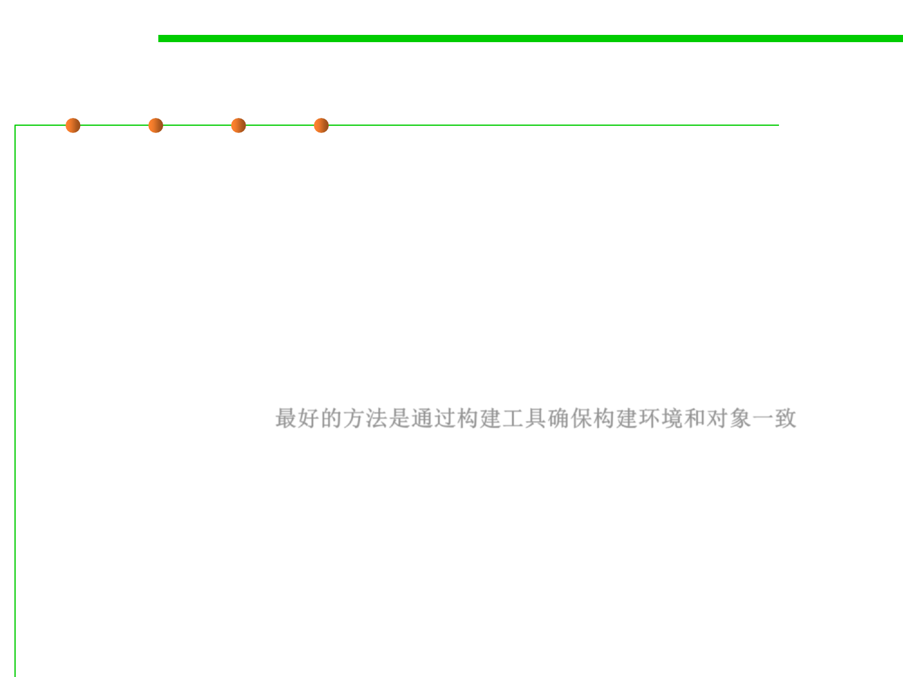

(1) To control the software
7.4 Debugging
▪ Controlling the Software
– Firstly, compiling from the same source. You also need to ensure that you
use the same compiler, configured in the same way, and the same runtime,
libraries, and any third-party code that is integrated with your software.
– Of course, using the same tools gets you nowhere if you don’t use them in
exactly the right sequence and with the same configuration as the software
was originally built with.
– The best way to ensure that you do is to create an automated build
process. (See 2.2) 最好的方法是通过构建工具确保构建环境和对象一致